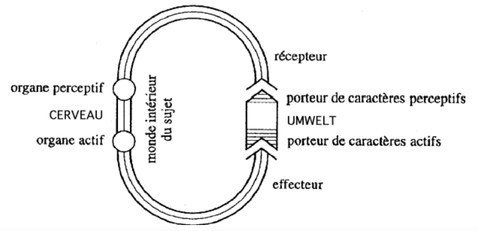

Descartes fait un distinction claire entre les caractéristiques de l’object observé, et celles transmises par l’observateur. L’object ne contient rien de ce qui caractérise l’humain par sa conscience de soi.
La théorie behavioriste
On parle aussi de théorie comportementaliste. L’école de psychologie béhavioriste fonde la psychologie sur une étude qui se veut objective du comportement animal et humain. La psychologie ne doit plus consister en une méthode introspective qui étudie les états intérieurs, les motivation et la émotions du sujet comme la psychanalyse mais plutôt étudier ce qui est donné à l’expérience.
Le béhaviorisme se développe au XXe siècle, mais on peut considérer que Descartes en est déjà un précurseur. En effet, dans la 5e partie du discours de la méthode il expose ce qu’on va appeller la théorie de l’animal-machine. Il crée la notion du dualisme corps-esprit ou dualisme de l’âme et du corps. Cette notion va être reprise par les philosophes anglo-saxons sous le nom de mind-body problem.
Pour Descartes, il faut ainsi séparer le matériel, ce qui est relatif aux corps, et qui est explicable au moyen de causes qui sont strictement et seulement physiques, matérielles c’est à dire mécaniques de ce qui est immatériel, lié à l’esprit.
Ainsi, les comportements des animaux sont explicables d’un point de vue physique, comme une action combinées complexe de différents corps. On peut donc comparer une montre ou une horloge à la croissance d’un arbre, tout deux s’agissant de processus mécaniques.
Le dualisme de Descartes mène à une séparation normative entre ce qui est chose et qui peut donc être utilisé et ce qui est pensant et donc sujet.
De plus, si la conscience n’est pas quelque chose de matériel, alors, comment peut-on savoir, dans le monde physique que nous avons à faire à un être conscient ? Autrement dit, comment être certain que les gens qui m’entourent sont des vrais humains ?
La première solution proposée à ce problème est le test de Turing, qui évalue le comportement pour déterminer la conscience.
Puisque l’action peut être imitée, la seule manifestation de la conscience dans le monde matériel c’est la parole. Néanmoins, il ne faut pas confondre cette parole, à un simple language qui pourrait uniquement communiquer des besoins ou des instincts.
La parole a plusieurs caractéristiques spécifiques :
- Elle doit comporter des signes se rapportent à une signification
- Elle peut exprimer des choses sans se rapporter à aucune passion.
Contrairement à la communication animale, la parole humaine n’est pas un simple prolongement des besoins physiques.
Descartes en conclut que si un corps tient des paroles qui correspondent à cette définition, il faut le considérer comme une sujet humain. De manière réciproque, un corps qui aurait un aspect humain et qui ne pourrait pas s’exprimer en suivant cet ensemble de règles ne doit pas être reconnu comme tel.
Si les actions d’un sujet (animal) peuvent êtres expliquées par des principes physique et matériels, alors il n’est pas légitime d’introduire une explication d’ordre supérieur (Occam’s razor ?).
En 1925, John Watson publie “behaviorism”, un livre qui va fonder le courant comportementaliste. Ses principes vont être repris dans de nombreux secteurs de la science. Dans ce livre, Watson veut rompre avec la psychologie introspective et propose que la psychologie devienne une science naturelle au même titre que la physique ou la chimie. Pour ce faire, il faut limiter le domaine de la psychologie à l’observable et rejeter toute référence à des entités métaphysiques comme l’âme ou l’esprit. Ainsi, la seule manifestation physique et observable objectivement de la psychologie d’un sujet est le comportement : la manière d’agir et de réagir physiquement.
Le comportement étudié est donc défini comme l’ensemble des réactions d’un sujet à un ensemble de stimuli. Cette idée va donner naissance à la théorie S-R ou stimulus-réponse qui théorise l’étude des relation entre les stimuli et leur réponse comme seule vraie psychologie scientifique.
Cette analyse se divise en deux catégories de comportements :
- Les comportements innés (réflexes)
- Les comportements appris, conditionnés.
L’étude du comportement est notamment célèbre par son utilisation en publicité et en marketing, à travers le conditionnement intentionnel des consommateurs (nudge).
Dans son livre penser comme un rat, Vincian Despret étudie les pratiques de la psychologie expérimentale. Les psychologues expérimentaux essayent de déterminer des lois générales du comportement, qu’il soit animal ou humain. Pour ce faire, ils utilisent des rats, pour essayer de modéliser des formes simplistes de comportement.
Certains psychologues expérimentaux vont aussi mener des expériences sur des humains, comme Stanley Milgram.
La psychologie expérimentale veut isoler des lois fondamentales du comportement des êtres vivant, de la même manière que la physique détermine des loi fondamentales du comportement des objets inertes. Néanmoins, lors de l’expérience, des biais cognitifs apparaissent nécessairement, liés notamment au cadre de l’expérience.
Modèle physico-chimique du protocole expérimental
Pourquoi le cadre épistémologique du laboratoire à été conçu pour des objets inertes ?
Depuis l’invention par Galilée du dispositif expérimental, le but de la science moderne est de découvrir, dans le cadre du laboratoire, c’est à dire dans le cadre d’un dispositif, d’une situation artificielle, des lois qui soient valables en dehors du laboratoire.
Le laboratoire sert ainsi à recréer un fragment de nature purifiée, c’est à dire isolée des phénomènes parasites. L’expérimentation à pour but d’isoler les facteurs à étudier des variables qui sont étrangères à ce phénomène. L’intérêt du laboratoire et du modèle expérimental est de supprimer ou abstraire certains paramètres qui sont présent dans le monde.
Dans le cas de l’expérience physico-chimique, l’objet étudié est neutre, il réagit de manière mécanique, causale et unilatérale. Le fait d’étudier cet objet dans les conditions du laboratoire de change rien à sa réaction, qui se déroulera de la même manière que dans la nature.
Dans le case de l’expérience psychologique, le laboratoire pourrait modifier la réaction des sujets étudiés. La psychologie comportementaliste théorise que le cadre du laboratoire ne changerait pas le comportement, et donc l’expérience psychologique en laboratoire serait possible.
Néanmoins, on peut penser que les animaux, et a fortiori les humains, ne seraient pas de objets qui réagissent à des choses mais plutôt des sujet qui interagissent avec leur environnement. La validation de cette hypothèse nous pousserait à penser que les expérience psychologique ne peuvent pas être calquées sur les expérience matérielles, physico-chimiques.
Expériences de Orne et Rosenthal
Orne
Orne est un spécialiste de l’hypnose. Il réalise une expérience qui vise à distinguer les sujet sous hypnose.
Afin de réaliser cet objectif, il va pousser des sujets hypnotisés et non-hypnotisés à réaliser des taches ennuyeuses et répétitives. En effet, la tolérance de taches répétitives est une caractéristique de l’hypnose. Il observe que les sujets non-hypnotisés vont tolérer les tâches ennuyeuses autant que ceux hypnotisés.
Orne en conclut que les sujets n’ont pas répondu à la question originale Êtes vous capables dans votre état normal de réaliser de tâches ennuyeuses et répétitives ? mais plutôt Qu’êtes vous prêts à endurer dans l’intérêt de la science ?.
Ainsi, le biais de la réalisation scientifique va influencer le comportement des sujets eux mêmes. Le sujet de l’expérience agit en répondant à ce qu’il interprète comme étant la demande du scientifique à son égard.
Ce que découvre Orne, c’est la présence d’artefact dans les expériences de psychologie. Il théorise que ces artefacts sont caractéristiques des expériences sur les être vivants.
Il y a artefact lorsque le scientifique s’aperçoit, après coup, que le sujet testé réponds en fait à une autre question que celle ques le scientifique avait en vue en construisant son expérience. Un artefact est donc un effet indésirable, un parasite ou encore un biais qui fausse l’expérience. La découverte que des artefacts se glissent de façon insidieuse dans les expériences de psychologie apparaît au psychologues de l’époque comme un très grave problème, puisque qu’il remets potentiellement en question la valeur de tout protocole expérimental en psychologie. Il se demandent donc si les artefacts peuvent être traqués et éliminés.
Dans son expérience, Milgram veut vérifier expérimentalement l’hypothèse de la banalité du mal Hannah Arendt.
Expérience de Stanley Milgram
Pour expliquer l’obéissance des sujets dans sont expérience, Milgram développe la notion d’état agentique. Il s’agirait d’une sorte de zone grise cognitive ou le sujet deviendrait agenten obéissant aveuglement à toute forme d’autorité. Cet état est déclenché par la relation avec une figure de pouvoir donnant des ordres.
Pourquoi les sujets vont-ils jouer le jeu ? D’après eux, ils ont vite sentis ou pré-sentis qu’il s’agissait d’un jeux, ou que du moins le sujet n’étais pas celui qu’on leur donnait. Il expliquent leur obéissance par une confiance en leur contribution au progrès de la science. Ainsi, ils percevaient un conflit entre ce qu’on leur avait demandé de faire et la réalité de l’expérience.
Ainsi, puisque l’expérience sur le vivant affecte son object, on ne peut pas y appliquer les méthodes expérimentales des sciences physique.
Anthropomorphisme en biologie
Uexküll et les mondes animaux
Jakob von Uexküll est un biologiste allemand, spécialiste de physiologie musculaire et de faune marine.
En 1934 il publie un livre d’éthologie intitulé Streifzüge durch die Umwelten von Tieren und Menschen. Il y introduit et développe le concept d’Umwelt, qu’on peut traduire par milieu, monde environnant ou monde propre.
Pour Descartes, l’absence de fonction de communication est un critère décisif dans son refus de les considérer comme des sujets au sens humain du terme. Pour lui, être un sujet implique de penser le sens de ce qu’on dit, c’est à dire parler et penser en première personne. Cet argument constitue une justification de la domination anthropocentrique de l’homme sur l’animal. Cette vision dualiste caractérise un refus de l’anthropomorphisme, qui est présent dans tout la science moderne. En effet, il s’agit d’un refus d’attribuer des signification aux comportement animaux si on arrive à expliquer ces comportements de manière mécanique. On peut attribuer cette démarche au principe du rasoir d’Ockham, c’est à dire qu’il faut chercher une cause de meme proportion que le phénomène que l’on cherche à expliquer.
Néanmoins, on peut remettre en question ce critère : n’y a-t-il pas d’autres manières de reconnaître l’existence de sujets, dans le monde ou la nature, que par l’attribution d’une conscience de soi ?
Peut-on penser une subjectivité qui serait décentrée du référentiel humain ?
Pour Uexküll,
L’animal est un sujet qui vit dans un monde qui lui est propre et dont il forme le centre.
Merleau-Ponty explique la notion d’Umwelt à travers division du monde en plusieurs domaines :
- Die Welt, le monde en soit, absolu et indépendant de toute relation avec le vivant.
- Umwelt, le monde de ou monde pour, centré autour d’un être vivant ou d’une espèce vivante.
- Le monde purement subjectif, sui existerait uniquement pour un individu.
Le livre d’Uexküll, s’ouvre sur un description précise des événements importants de la vie d’une tique, à partir de laquelle il va généraliser le principe des Umwelten qui valent pour tout les animaux. Ainsi, il va exprimer un problème central :
La tique est elle une machine ou un machiniste ?
Il oppose l’animal en tant qu’objet, au sens cartésien, et l’animal en tant que sujet, actif. Dans le premier cas, si la tique est une machine, la vie animale implique un approche dite physiologique ce qu’il va opposer à la conception biologiste.
Approche physiologiste:
- Illustrée par Jacques Loeb, critiquée par Uexküll.
- Approche mécaniste, qui se fonde sur le schéma de l’arc-réflexe. Approche biologiste:
- Défendue par Uexküll.
- Non-mécaniste et fondée sur le schéma du cercle-fonctionnel théorisé par Uexküll.
Uexküll critique la vision physiologiste s’opposant à la conception mécaniste qui vise à réduire tout le vivant à des relations physico-chimiques. Il va chercher à trouver une conception du vivant centrée sur sa spécificité, liée au comportement.
L’approche physiologiste
L’approche physiologiste propose d’analyser l’être vivant comme un technicien ou un ingénieur analyserait une machine. Le modèle qui constitue la base de cette analyse est celui de l’arc-réflexe.
Ce schéma considère le monde extérieur comme un ensemble de stimuli pour l’animal, qui sont perçus par ses récepteurs, qui vont transmettre un signal a des cellules sensorielles, puis à des cellules motrices qui vont déclencher un effecteur qui va produire une réponse.
D’après Uexküll, ce schéma transforme l’animal en machine sans machiniste. Il s’agirait donc d’un simple dispositif qui transmet des mouvements extérieurs vers ses organes d’action, et donc vers d’autres mouvements dirigés vers le monde extérieur. Dans ce schéma, l’animal ne fait que transmettre passivement un stimulus qu’il reçoit de l’extérieur. L’ensemble du schéma fonctionne comme une machine, il n’y à aucun facteur subjectif.
La théorie physique du milieu est une théorie liée à l’approche physiologiste qui énonce que le milieu, ou l’environnement détermine les caractéristiques des individus qui y évoluent. Ainsi, le comportement animal ne serait rien d’autre qu’une série de réponses à des stimuli qui existent objectivement dans le milieu extérieur. Cela implique donc que les animaux se rapportent à des objects et donc à un monde qui demeure unique et identique, indépendant d’eux. Cette position est considérée comme objectivisme, au sens ou elle affirme qu’il faut partir du monde extérieur, comme ordre des choses stable, objectif et en déduire le comportement de l’animal qui va en être la cause.
En adoptant la théorie physiologiste et du milieu, on peut considérer que le phénomène de la vie est soluble, absorbé par le monde de la matière. Ainsi, la biologie serait réductible au physico chimique. Uexküll proteste contre ce réductionnisme, en estimant que la singularité phénoménologie de la vie est perdue de vue.
L’approche biologiste
Etre un sujet c’est avoir un monde, c’est à dire se comporter, ou agir dans un monde, un monde propre (Umwelt).
Dans Blade Runner, la question de distinguer le vivant de la machine se pose.
L’approche de physiologiste de Loeb suppose que le stimuli est une forme d’instant 0 permanent dans le comportement de l’animal. Cette vision est critiquée par les biologiste, qui considère que l’animal opère déjà une sélection dans les stimuli qui vont l’affecter.
Uexküll va développer le schéma du cercle fonctionnel, qui considère l’animal comme un système en interaction constante avec son environnement, qui va a la fois réagir et agir. Ce schéma montre que un object du monde existe pour l’animal que dans la mesure ou il l’intéresse.

Le model va construire son monde a partir des stimuli qui l’intéressent. Le cercle fonctionnel nous amène à penser qu’il n’y à pas d’un coté un object en soi, le milieu, l’environnement et de l’autre coté l’animal car l’object n’existe que par et pour un sujet percevant qui l’institue, qui le construit à partir de ses organes perceptifs, actifs.
Par example, les ultrasons n’existent pas pour nous.
Objections et erreurs
On peut à première vue penser que le critère distinctif du vivant avancé par Uexküll est lié à la perception consciente, au libre arbitre et donc réservé à l’humain. Des lors que l’on à cette vision, on peut avoir du mal a envisager la conception d’Uexküll, qui donnerait une conscience a des animaux qui manifestement n’en ont pas.
Néanmoins, la vision d’Uexküll ne va jamais avancer cet argument, en ce contentant d’une approche explicative scientifique. Il ne faut pas confondre la distinction Physique / Biologique et nécessaire / choisi.
Le rapport entre le sujet animal et l’objet n’est pas mécanique parce que l’objet n’a pas d’existence autonome. La chose en soi ne peut pas agir par elle même sur je sujet biologique.